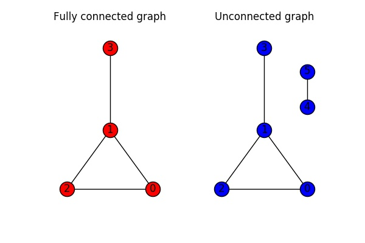
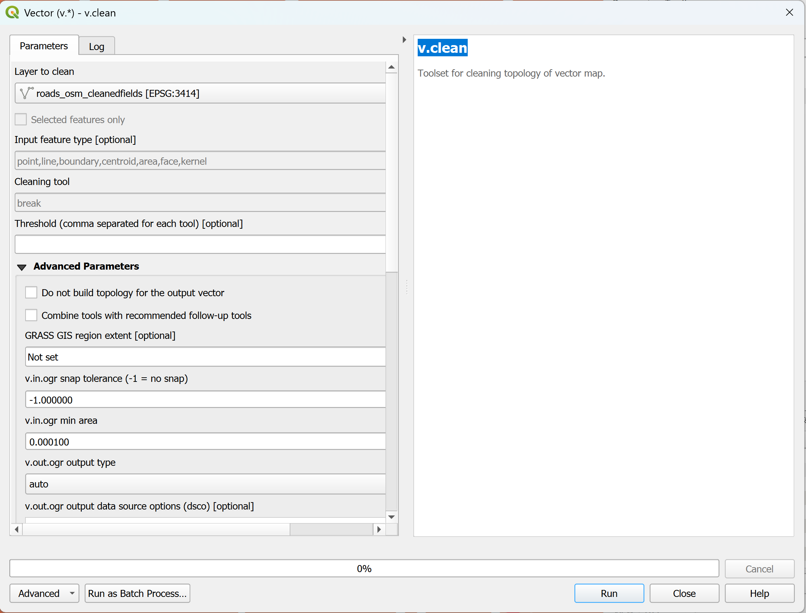

class: center <br> # Spatial Analysis of Urban Data ## Lecture and Tutorial: Python Network Analysis for Urban Systems [Bayi Li](mailto:barryli081@gmail.com) .toc-wrapper[ <div class="toc"> <a href="#week10-focus" class="toc-item">Week 10 Focus</a> <a href="#distance" class="toc-item">Distance and Routing</a> <a href="#topo" class="toc-item">Topological Measures</a> <a href="#workflow" class="toc-item">Python Workflow</a> </div> ] --- name: week10-focus ## Week 10 Focus This lecture introduces Python-based network analysis for urban systems, with an emphasis on reproducible routing, accessibility, and graph metrics. - model street systems as graphs of nodes and edges - compare straight-line and network-constrained distance - use Python libraries to calculate routes and metrics - interpret connectivity and centrality in urban context --- ## Learning Objectives By the end of this session, students should be able to: 1. explain how urban networks are represented as graphs 2. distinguish Euclidean distance from network distance 3. describe how OSMnx and NetworkX support routing and accessibility analysis 4. interpret major topological measures for urban networks 5. follow a basic Python workflow for extracting, cleaning, and analysing street networks --- ## Lecture Outline 1. Why network analysis matters in urban studies 2. Distance, routing, and accessibility 3. Building and cleaning network graphs 4. Topological measures in Python 5. Tutorial workflow and reading material --- ## Why Python for Network Analysis? Python is useful for network analysis because it supports: - reproducible graph workflows - repeated routing across many origins and destinations - custom cost variables such as distance, time, or impedance - direct computation of centrality and accessibility metrics - clean export of results into tables, maps, and reports --- ## Core Python Libraries - **NetworkX**: graph structures and algorithms - **OSMnx**: street-network download, construction, and visualisation - **GeoPandas**: spatial tables for nodes, edges, and outputs - **Pandas**: summaries, joins, and comparison tables - **Shapely**: geometric operations used around network workflows --- ## Python vs GUI-Based Workflow QGIS tools are still useful for visual checking and exploratory analysis. Python becomes stronger when you need: - reproducibility - automation - batch routing - custom metrics - clear documentation of each analytical step --- name: distance .right_half[ <figure> <img src="imgs/distance/different_type_distances.jpg" class="zoomable" width="100%"> <figcaption>Different distance concepts answer different urban questions.</figcaption> <figsubcaption>Source: 10.1186/1476-072X-7-7</figsubcaption> </figure> ] ## Distance in Urban Networks Urban movement can be measured in different ways. The most important distinction is between: - **Euclidean distance**: straight-line distance between two points - **Network distance**: travel constrained by the available street or transport network For accessibility analysis, network distance is usually more realistic. --- ### Euclidean Distance <div align="center"> <figure> <img src="imgs/network/formula_euclidean_dist.png" alt="euclidean_formula" width="30%"> </figure> </div> <div align="center"> <figure> <img src="imgs/network/Euclidean_distance_2d_image.svg" alt="euclidean_diagram" width="50%"> </figure> </div> <xL>Always check the CRS.</xL> If the layer uses a geographic CRS, distances will be measured in degrees rather than meters. --- .right_half[ <figure> <img src="imgs/network/practice_data_viz.png" class="zoomable" width="100%"> </figure> ] ### Euclidean Distance: Practice <xL>What is the spatial accessibility of hawker centres relative to MRT stations in Tampines?</xL> Data: 1. Hawker centre dataset 2. MRT stations, including LRT 3. Tampines planning boundary --- .right_half[ <figure> <img src="imgs/network/practice_data_viz_edge_effect.jpg" class="zoomable" width="100%"> </figure> ] ### Edge Effect Boundary effects can distort spatial or network analysis. To manage edge effects: 1. buffer the study area 2. interpret boundary results carefully 3. state the handling method clearly in the workflow --- ### Euclidean Distance: Practice .right_half[ <figure> <img src="imgs/network/calculation_euclidean_dist.png" class="zoomable" width="100%"> <figcaption>Example Euclidean distance calculation workflow.</figcaption> </figure> ] - **Distance-based question:** how close is the nearest hawker centre? - **Buffer-based question:** how many hawker centres are accessible within a chosen radius? --- ### Composite Accessibility Index <div align="center"> <figure> <img src="imgs/network/composite_accessibility_index.png" alt="cai_formula" width="30%"> </figure> </div> Two metrics per station: 1. `sd(i)`: nearest distance to a hawker centre 2. `sc(i)`: hawker count within a fixed walking radius Weights allow both indicators to contribute to one accessibility score. <xL>Which MRT stations have the lowest hawker-centre accessibility, and how can this inform future allocation?</xL> --- ### Why Use Network Distance? Straight-line measurement usually underestimates real travel effort. Urban accessibility is shaped by: - street layout - barriers and detours - one-way rules - travel-cost assumptions such as time instead of distance --- ### From Study Area to Street Graph <xL>Using Tampines as an example, we can buffer the study area, download roads, and turn them into a graph for routing and accessibility analysis.</xL> <div align="center"> <figure> <img src="imgs/network/buffer_enquiry.png" alt="buffer2data" width="100%"> <figcaption>Download street-network data after buffering the study area.</figcaption> <figsubcaption>Source: https://arxiv.org/pdf/1611.01890</figsubcaption> </figure> </div> --- ## From OSM Roads to a Python Graph Typical workflow: 1. define the study area and handle edge effects 2. download a street network from OpenStreetMap with OSMnx 3. inspect node and edge attributes 4. simplify or filter the network if needed 5. calculate shortest paths or accessibility with NetworkX --- ### Network Data Cleaning OSM data often includes many attributes such as name, surface, lanes, and speed. Keeping only relevant fields helps to: 1. reduce file size 2. speed up processing 3. simplify interpretation .right_half[ <figure> <img src="imgs/network/reduce_network_size.png" width="100%"> <figcaption>Reducing unnecessary fields can make network processing more efficient.</figcaption> </figure> ] Useful fields often include: 1. `highway` 2. `oneway` 3. `maxspeed` 4. `lanes` 5. OSM ID --- ## Typical Python Workflow Snippet ```python import osmnx as ox import networkx as nx place = "Tampines, Singapore" graph = ox.graph_from_place(place, network_type="walk") origin = ox.distance.nearest_nodes(graph, X=103.953, Y=1.353) destination = ox.distance.nearest_nodes(graph, X=103.940, Y=1.354) route = nx.shortest_path(graph, origin, destination, weight="length") ``` The key idea is that the street system becomes a graph and routing becomes a shortest-path problem. --- ### Network Distance: Practice From `Tampines MRT` to `The Hawker Centre @ Our Tampines Hub` Red line: straight-line route Blue line: network route <div align="center"> <figure> <img src="imgs/network/network_distance_example.png" class="zoomable" width="100%"> </figure> </div> --- ### Origin-Destination Matrix To calculate distances from each MRT station to each hawker centre in Tampines: <div align="center"> <figure> <img src="imgs/network/m2n_networkdist_matrix.png" class="zoomable" width="50%"> </figure> </div> --- ### Euclidean vs Network Distance The Euclidean distance almost always underestimates real-world network distance, and the gap varies across point pairs. <div align="center"> <figure> <img src="imgs/network/measurement_in_difference.png" class="zoomable" width="50%"> </figure> </div> --- name: topo .right_half[ <figure> <img src="imgs/network/topological_measures.png" width="100%"> <figsubcaption>Source: 10.21035/ijcnmh.2017.4(Suppl.3).S03</figsubcaption> </figure> ] ## Topological Measurements Topological measurements describe the structure, connectivity, and efficiency of a network based on how nodes and edges are arranged. They help us understand: 1. how well connected the network is 2. which nodes or links are most important 3. how movement and vulnerability are distributed --- ## Main Topological Measurements of a Network ### Density - Definition: the ratio of actual connections to all possible connections - Interpretation: higher density suggests more alternative routes <div align="center"> <figure> <img src="imgs/network/network_density_calculation.png" width="50%"> <figsubcaption>Source: https://www.numberanalytics.com/blog/mastering-network-density-in-social-network-analysis</figsubcaption> </figure> </div> | Density Range | Interpretation | |---|---| | 0 - 0.3 | Low density, sparse | | 0.3 - 0.6 | Moderate density | | 0.6 - 1 | High density | --- ## Main Topological Measurements of a Network .right_half[ <figure> <img src="imgs/network/beta_index.webp" width="100%"> <figcaption>Beta Index in Graph.</figcaption> <figsubcaption>Source: https://transportgeography.org/contents/methods/graph-theory-measures-indices/beta-index-graph/</figsubcaption> </figure> ] ### Connectivity (Beta Index) - Definition: average number of links per node - Interpretation: values above 1 usually indicate a better connected network <div align="center"> <figure> <img src="imgs/network/beta_index_formula.png" width="40%"> </figure> </div> --- ## Main Topological Measurements of a Network ### Average Path Length - Definition: mean shortest-path length between all node pairs - Interpretation: lower values suggest more efficient movement <div align="center"> <figure> <img src="imgs/network/avg_path_len.png" width="70%"> <figsubcaption>Source: https://rpubs.com/odenipinedo/network-analysis-in-R</figsubcaption> </figure> </div> --- ## Main Topological Measurements of a Network ### Node Degree - Definition: number of edges attached to a node - Interpretation: high-degree nodes often act as local hubs or major junctions <div align="center"> <figure> <img src="imgs/network/node_degree.png" width="90%"> </figure> </div> --- .right_half[ <figure> <img src="imgs/network/closeness_centrality.png" width="100%"> <figsubcaption>Source: https://www.jsums.edu/nmeghanathan/files/2015/08/CSC641-Fall2015-Module-2-Centrality-Measures.pdf</figsubcaption> </figure> ] ## Main Topological Measurements of a Network ### Closeness Centrality - Definition: inverse of the total shortest-path distance from one node to all others - Interpretation: high closeness suggests strong accessibility <div align="center"> <figure> <img src="imgs/network/closeness_centrality_eq.png" width="50%"> </figure> </div> --- ## Main Topological Measurements of a Network ### Betweenness Centrality - Definition: number of shortest paths that pass through a node or edge - Interpretation: high betweenness often marks bridges or bottlenecks <div align="center"> <figure> <img src="imgs/network/betweeness_centrality.png" width="55%"> <figsubcaption>Source: https://www.jsums.edu/nmeghanathan/files/2015/08/CSC641-Fall2015-Module-2-Centrality-Measures.pdf</figsubcaption> </figure> </div> --- | **Measure** | **What It Describes** | **What It Tells You** | |---|---|---| | **Density** | How full the network is compared with its maximum possible links. | Shows general connectedness and route redundancy. | | **Connectivity (Beta Index)** | The ratio of edges to nodes. | Indicates overall connectedness. | | **Average Path Length** | Average number of steps between all pairs of nodes. | Reflects efficiency. | | **Node Degree** | Number of edges linked to a node. | Highlights local hubs. | | **Closeness Centrality** | How close a node is to all others. | Measures accessibility. | | **Betweenness Centrality** | How often a node lies on shortest paths. | Shows bridge or bottleneck roles. | --- | Measure | Example Research Question | |---|---| | **Density** | How does street-network density vary across neighbourhoods, and how does this relate to walking rates? | | **Connectivity (Beta Index)** | How does local connectivity influence route choice for short urban trips? | | **Average Path Length** | How does average path length affect travel time between public facilities? | | **Node Degree** | How do high-degree junctions shape traffic flow and congestion? | | **Closeness Centrality** | How does centrality relate to access to shops, parks, and transit? | | **Betweenness Centrality** | Which streets or junctions operate as bottlenecks in the network? | --- ## Network Metrics in Python With NetworkX, these measures can be computed directly in code. ```python degree_dict = dict(graph.degree()) closeness = nx.closeness_centrality(graph) betweenness = nx.betweenness_centrality(graph, weight="length") ``` This makes it easier to compare areas, export results, and rerun the same workflow consistently. --- ## How to Get a Clean Network .right_half[ <figure> <p></p> <figcaption>A fully connected versus an unconnected graph.</figcaption> <figsubcaption>Source: walkenho.github.io/graph-theory-and-networkX-part2/</figsubcaption> </figure> ] Network analysis has relatively high data-quality requirements. 1. roads not snapped at intersections may create unrealistic routes 2. travel-time analysis needs usable attributes such as `oneway`, `maxspeed`, and `length` 3. disconnected components make some destinations unreachable --- ### Further Cleaning: Understand OSM Roads OSM splits roads into separate ways whenever a relevant attribute changes. <div align="center"> <figure> <img src="imgs/network/broken_rd_segs.gif" alt="OSM_Roads" width="30%"> <figcaption>Segmented OSM roads.</figcaption> </figure> </div> --- .right_half[ <figure> <p></p> <figcaption>Topology checking still matters even if the final analysis is coded in Python.</figcaption> <figsubcaption>Source: https://grass.osgeo.org/grass-stable/manuals/v.clean.html</figsubcaption> </figure> ] ## Why Cleaning Still Matters in Python You still need to check: - whether roads connect at intersections - whether directionality is encoded correctly - whether travel-cost attributes are interpretable - whether the graph is one connected system or multiple components --- name: workflow ## Tutorial Workflow 1. define a study area and consider edge effects 2. download or prepare a street network 3. inspect node and edge attributes 4. build a graph and check connectivity 5. calculate routes, matrices, or accessibility 6. compute topology metrics such as degree, closeness, and betweenness 7. interpret results against an urban question --- ## Reading Material - OSMnx documentation: https://osmnx.readthedocs.io/ - NetworkX documentation: https://networkx.org/ - Boeing, G. (2017). OSMnx: New methods for acquiring, constructing, analyzing, and visualizing complex street networks. - Additional urban accessibility and graph-analysis readings used in class discussion --- ## Key Takeaways - Python network analysis treats urban systems as graphs of nodes and edges. - Network distance is more realistic than Euclidean distance for many accessibility questions. - OSMnx and NetworkX support reproducible routing, accessibility, and topology workflows. - Topological metrics help identify hubs, bottlenecks, and efficient or vulnerable structures. - Clean network data remains essential even in a fully coded workflow. --- <xL>Continue with Lecture: </xL><button onclick="window.location.href='cvurban.html'">Go to Computer Vision and Urban Case Study</button> <xL>Back to course menu: </xL><button onclick="window.location.href='index.html'">Go Back to Menu</button>